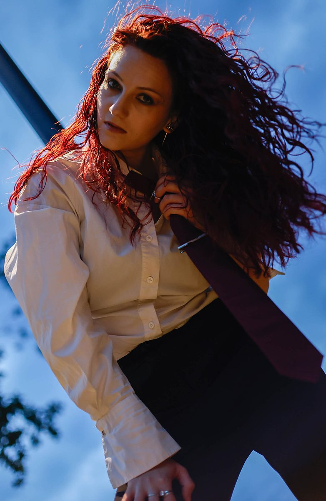

Без масок
Помогаю расслабиться и забыть про камеру.Настоящие эмоции важнее идеальной позы.
Фотограф · Казань
Портрет, семья, творчество и друзья.Живые кадры про чувства, свет и вас настоящих.

01 О съёмке
Привет, я Софья,
фотограф из Казани.
Снимаю портреты,
семейные и творческие истории.
Мне важно не просто сделать
красивый кадр,
а поймать состояние,
в котором человек настоящий.
На съёмке не нужно играть роль.
Достаточно быть собой -
остальное соберём вместе.
Помогаю расслабиться и забыть про камеру.Настоящие эмоции важнее идеальной позы.
Ищу свет, в котором вы раскрываетесь.
Кадры, которые хочется пересматривать.Для себя, семьи, соцсетей и проектов.

02 Портрет
Уникальная красота - в случайном повороте головы, в живом взгляде, в каждой линии тела и глубине души. Когда ты в контакте с собой, это невозможно не заметить: рождается та самая энергия, от которой мурашки.
Создать личную фотоисториюМужской портрет
Взгляд, уверенность, харизма, движение, в котором чувствуется энергия. У меня на съёмке только живой процесс, комфортная атмосфера и сильные кадры, которые работают на тебя: в соцсетях, в проектах и просто для себя.
03 Семья
Спустя годы вы не вспомните, во что были одеты. Но вы точно вспомните, как сильно любили.
04 НаТворим
Пространство, где реальность подстраивается под желания твоей души.
Это способ вырваться из рутины и увидеть себя по-новому:
глубже, ярче, как героя любимого кино или ожившей картины.
Никаких рамок и шаблонов - только свобода, радость эксперимента
и кадры с особой магией, от которых невозможно оторвать взгляд.
06 Проекты
Каждая серия рождается из чуткого внимания к нюансам, настроению и неповторимости процесса.
Никаких типовых решений - только живая энергия момента, гармония кадра и результат актуальный на все времена
08 Контакты
Пишите!
Подберём образ, локацию и удобное для вас время!